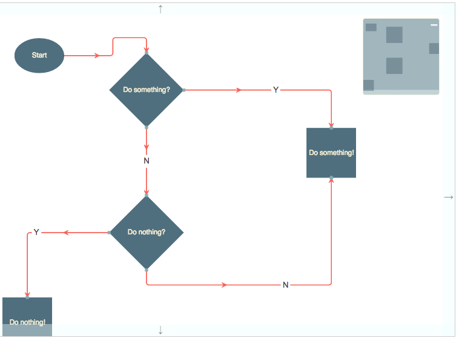

The Miniview is a widget that provides a miniaturized view of the contents of some Surface, allowing you to pan/zoom the contents. It is zoomed out to such an extent that all of the nodes in the Surface are visible within its viewport, and contains a "panner" element that maps the current visible viewport of the Surface to which it is related.
This screenshot shows the miniview in the Flowchart Builder demonstration.

To get a Miniview you can either first get a Surface:
var toolkit = jsPlumbToolkit.newInstance();
var surface = toolkit.render({
container:"someElId"
});
...and then ask that Surface to create a Miniview:
var miniview = surface.createMiniview({
container:"someMiniContainerId"
});
or, you can supply Miniview parameters to the render call and then subsequently get the Miniview from the Surface:
var toolkit = jsPlumbToolkit.newInstance();
var surface = toolkit.render({
container:"someElId",
miniview:{
container:"someMiniContainerId"
}
});
var miniview = surface.getMiniview();
The size of a miniview is something you set yourself, either through CSS, or via inline styles on the miniview element. The jsPlumb Toolkit uses the size of a miniview combined with the extents of the visible content in the related Surface to compute the appropriate zoom level for the miniview.
The zoom wheel can be used to zoom in and out via a miniview. When this occurs, the visible node set does not change - the miniview always shows the entire dataset - but the panner element changes size to reflect the fact that the nodes visible in the related Surface's viewport have changed.
These are the classes you can use to style the Miniview widget. Note that nodes in the Miniview are sized to be identical to their mapped nodes in the related Surface (but the Miniview is zoomed out, so they are not 1:1 in size with their related nodes). You could of course use CSS to force a size for nodes in the Miniview, but this is not recommended; if your Surface contains nodes of various sizes but the Miniview uses a uniform size, the user may experience a certain discontinuity between the two.
| Class | Description |
|---|---|
| jtk-miniview | Assigned to an element that is acting as a Miniview |
| jtk-miniview-canvas | Assigned to the work area in the Miniview |
| jtk-miniview-panner | Assigned to the element used to pan the Surface from the Miniview |
| jtk-miniview-element | Assigned to all elements on the Miniview's canvas |